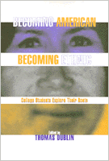

<body bgcolor="#FFFFFF" text="#000000" link="#0000FF" vlink="#CC0000" alink="#CC0000"><center><hr width="350" size="1" align="center" noshade>Personal reflections on the challenges that face college students coming to understand their ethnicity in contemporary America<hr width="350" size="1" align="center" noshade><p><a href="https://cdcshoppingcart.uchicago.edu/Cart/ChicagoBook.aspx?ISBN=9781566394383&&PRESS=temple" target="_top">Buy this book!</a> | <a href="https://cdcshoppingcart.uchicago.edu/Cart/Cart.aspx?PRESS=temple" target="_top">View Cart</a> | <a href="https://cdcshoppingcart.uchicago.edu/Cart/Cart.aspx?PRESS=temple" target="_top">Check Out</a></p><p></p></center><!--none//--><h1>Becoming American, Becoming Ethnic</h1>
<H2>College Students Explore Their Roots</H2>
<h3>edited by Thomas Dublin</h3>
<P>cloth 1-56639-438-4 $89.50, Apr 96, <FONT COLOR=#990033>Available</FONT>
<br>paper 1-56639-439-2 $33.95, Apr 96, <FONT COLOR=#990033>Available</FONT>
<br>Electronic Book 1-43990-369-7 $33.95 <FONT COLOR=#990033>Available</FONT>
<BR> 256 pp
6x9
48&nbsp;halftones
</P><p>More than at any time since the 1920's the issues of immigration and ethnicity have become central to discussions of American society and identity. <I>Becoming American, Becoming Ethnic </I>addresses this contemporary debate, bringing together essays written over the past eighteen years by college students exploring their ethnic roots&#151from the experiences of their forbears to the place of ethnicity in their lives.
<p>The students range from descendants of Europeans whose families immigrated several generations ago to Asian and Latin American immigrants of more recent decades to African-Americans and Hispanics&#151some have more than one ethnic heritage to grapple with, while others have migrated from one place to another within the United States. Together their voices create a dialogue about the interplay of ethnic traditions and values with American culture.
<p>These are moving personal reflections on the continuities and changes in the ethnic experience in the United States and on the evolving meaning of ethnicity over time and across generations. Despite vocal concerns in recent years about ethnic divisiveness, these student writings show how much many young Americans share even in their differences.
<BR>&nbsp;<h2>Excerpt</h2><P>Excerpt available at <a href="http://www.temple.edu/tempress">www.temple.edu/tempress</a></p>
<BR>&nbsp;<h2>Contents</h2><P>
<p>Acknowledgments
<br>Introduction
<p><b>Part I: Family Traditions</b>
<br>1. Life after Tercera &#150 Virginia Coreia
<br>2. Coming to Terms with My Heritage &#150 Tanya Moldzinski
<br>3. The Family History of a Fourth-Generation Pole &#150 Sara Kindler
<br>4. My Paternal Forebears &#150 Michele Kitko
<br>5. The Loss of My Family's Ethnic Ties and the Strengthening of Their American Identities &#150 Rachel Koch
<br>6. What's a Tyrolean? The Immigration of Mario Leonardi to America &#150 Karen A. Gryga
<br>7. Turetzky Family Assimilation: From Grandparents to Father to Me &#150 Marc Turetzky
<br>8. Changing Worlds: The Immigration Experiences of My Paternal Grandparents &#150 Stephanie A. Courtney
<br>9. Roots Paper &#150 Raffi Ishkanian
<br>10. A Family History &#150 Bob Vaage
<br>11. My Austrian-Italian Ethnicity &#150 Susan Carnicelli
<br>12. East Side Story: What <I>West Side Story</I> Left Out &#150 Josephine Burgos
<br>13. Three Generations in America &#150 Gloria Genel
<br>14. Where I Stand and Why &#150 La Toya Powell
<p><b>Part II: Our Parents, Ourselves</b>
<br>15. A Challenge of Loyalty &#150 Lynn Sugamura
<br>16. A Bicultural Experience &#150 Shana R. Rivas
<br>17. My Family History &#150 Cecilia Pineda
<br>18. Being an Other &#150 Melissa Algranati
<br>19. Discovering My Ethnic Roots &#150 Sang-Hoon Kim
<br>20. The Experiences of My Parents in Italy and America &#150 Peter Bosco
<br>21. Getting to Know My Parents So That I May Know Who I Am &#150 Lizette Aguilar
<br>22. Finding a Home &#150 Ann Fenech
<br>23. The Assimilation Problems of My Family in America &#150 Soo Y. Kim
<p><b>Part III: Ethnicity in Our Lives</b>
<br>24. The Oreo Cookie: Black on the Outside, White on the Inside &#150 Cathy Thompson
<br>25. Should I or Shouldn't I? &#150 Jamie Dominguez
<br>26. My Experience with Immigration/Assimilation in America &#150 Catherine Tagudin
<br>27. Leaving Home &#150 Anh-Dao Nguyen
<br>28. Being Indian in America: My Ethnic Roots and Me &#150 Lila Shah
<br>29. My Immigrant Experience &#150 Vladimir Sinayuk
<br>30. Triple Identity: My Experience as an Immigrant in America &#150 Puwat Charukamnoetkanok
<br>31. Two Poems &#150 Rose Rameau
<p>Afterword
<br>Appendix: Sample Roots Paper Topic
<br>Notes on Contributors
</P><BR>&nbsp;<H2>About the Author(s)</H2>
<table><tr><td valign="top"><img src="/tempress/authors/1148_au.gif" height="90" width="75"></td><td width="100%" valign="middle"><p><B>Thomas Dublin, </B>Professor of History at the State University of New York at Binghamton, has taught courses on immigration and ethnicity for nearly 20 years. He has published several books, most recently <I>Immigrant Voices: New Lives in America, 1773-1986 </I>and <I>Transforming Women's Work: New England Lives in the Industrial Revolution.</I></P></td></tr></table>
<BR><H2>Subject Categories</H2>
<p><A HREF="/tempress/race.html" TARGET="_top">Race and Ethnicity</a>
<BR><A HREF="/tempress/immigration.html" TARGET="_top">Immigration Studies</a>
</p>
<BR><h2 class="inpageheading">In the series</H2>
<P><I><a href="http://www.temple.edu/tempress/critical.html" onMouseOver="window.status='Click for other books in this series!'; return true;" onMouseOut="window.status=''; return true;" target="_top">Critical Perspectives on the Past</a></i>, edited by <a href="http://www.temple.edu/tempress/authors/benson_memoriam.html" target="_top">Susan Porter Benson</a>, Stephen Brier, and Roy Rosenzweig.
</p><p><i>Critical Perspectives on the Past</i>, edited by Susan Porter Benson, Stephen Brier, and Roy Rosenzweig, is concerned with the traditional and nontraditional ways in which historical ideas are formed. In its attentiveness to issues of race, class, and gender and to the role of human agency in shaping events, the series is as critical of traditional historical method as content. Emphasizing that history is itself an interpretation of material events, the series demonstrates that the historian's choices of subject, narrative technique, and documentation are politically as well as intellectually constructed.</p>
<p align="center"><a href="https://cdcshoppingcart.uchicago.edu/Cart/ChicagoBook.aspx?ISBN=9781566394383&&PRESS=temple" target="_top">Buy this book!</a> | <a href="https://cdcshoppingcart.uchicago.edu/Cart/Cart.aspx?PRESS=temple" target="_top">View Cart</a> | <a href="https://cdcshoppingcart.uchicago.edu/Cart/Cart.aspx?PRESS=temple" target="_top">Check Out</a></p><p><font face="Arial" size="1"><a href="copyright.html" onMouseOver="window.status='Web Copyright Policy';return true;" onMouseOut="window.status=''" title="Web Copyright Policy">&copy;</a> 2015 <a href="http://www.temple.edu" target="new" onMouseOver="window.status='Link to Temple University home page';return true;" onMouseOut="window.status=''" title="Link to Temple University home page">Temple University</a>. All Rights Reserved. http://www.temple.edu/tempress/titles/1148_reg.html</font></p>